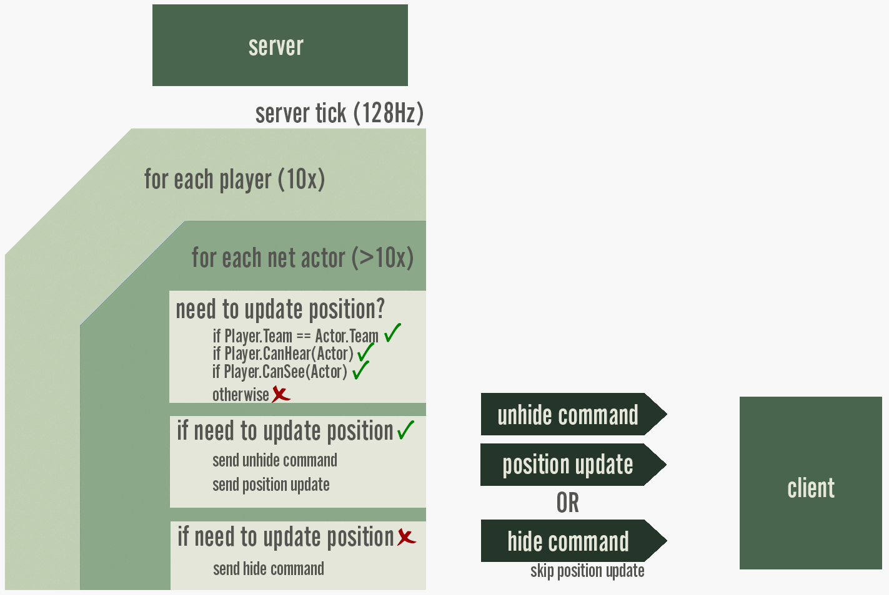
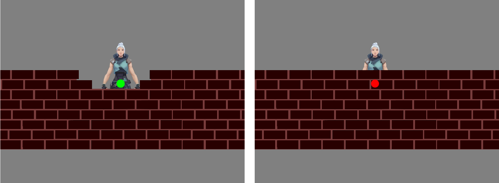
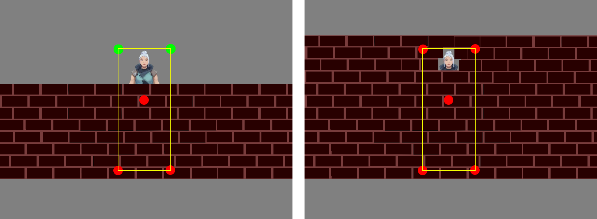
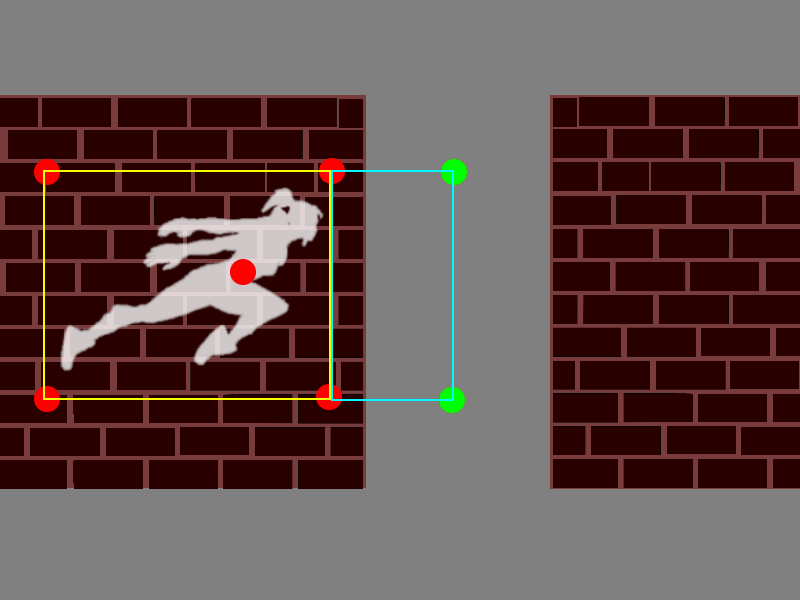
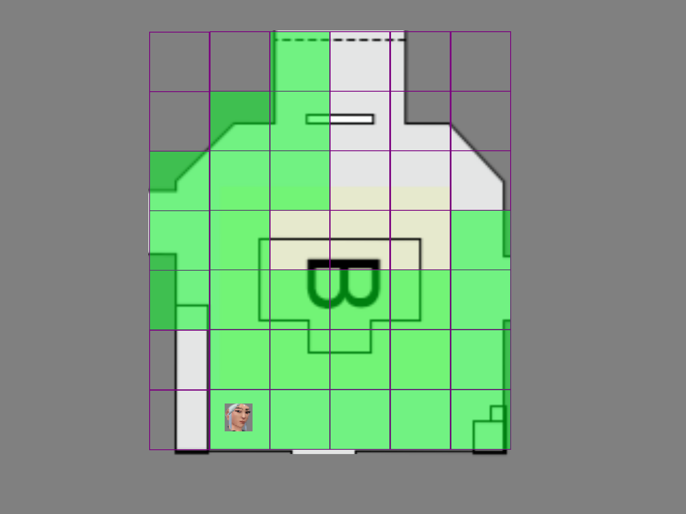
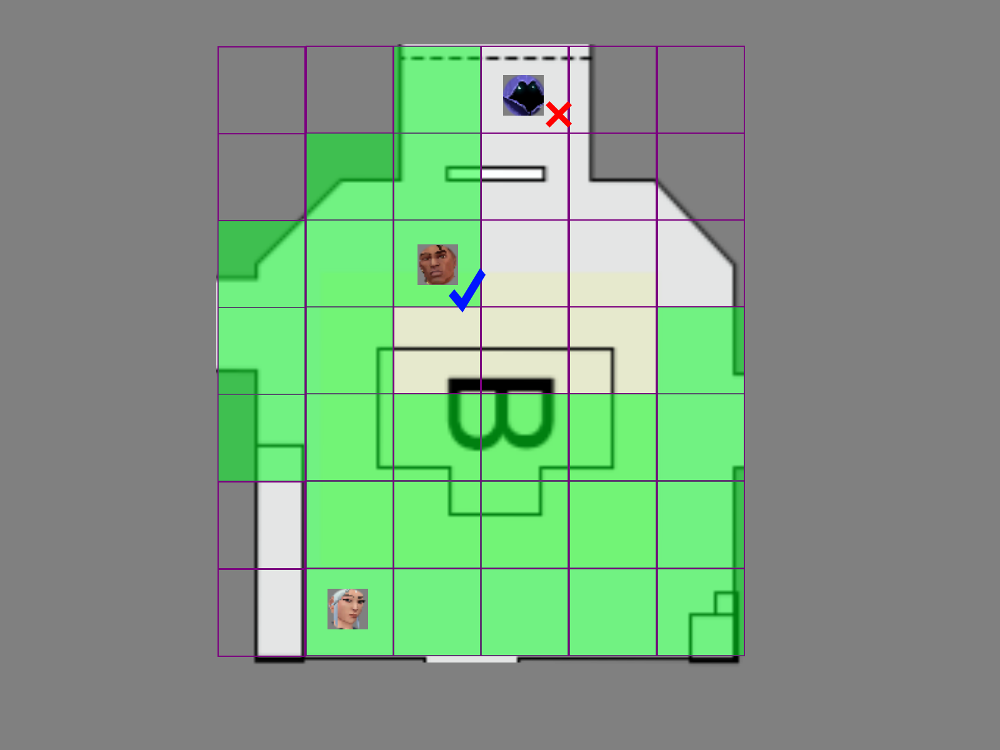
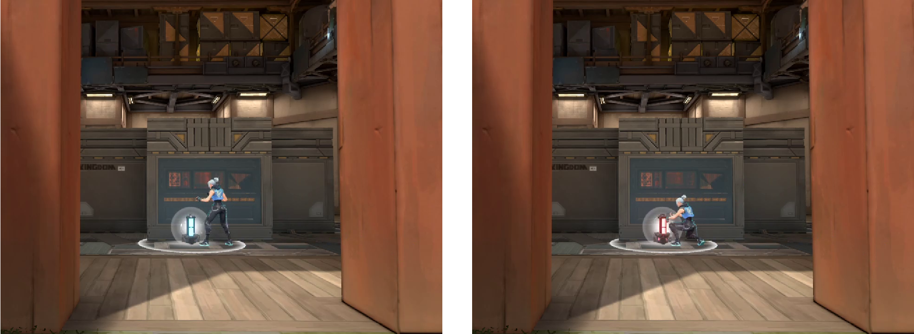
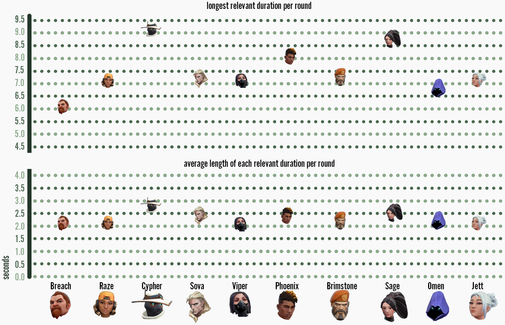

Demolishing Wallhacks with VALORANT's Fog of War
Hi, I’m Paul “Arkem” Chamberlain, the anti-cheat lead for VALORANT, Riot’s new tactical FPS. I’m part of VALORANT’s game engineering team, and I’m one of many people at Riot working on game security. To learn more about VALORANT security, check out our anti-cheat kernel post, and to read about League of Legends security tech, check out our anti-cheat Tech Blog post.
From the very beginning of VALORANT development, we made it a priority to build out cheating resistance to ensure competitive integrity. In this article, I’ll walk you through one of these anti-cheat systems - Fog of War. This is one of VALORANT’s key security systems, which focuses on combating cheats that take advantage of a game client’s access to information, like wallhacks.
What’s In A Wallhack?
Cheaters use wallhacks to see opponents through walls. In a tactical shooter like VALORANT, this gives them huge advantages when it comes to individual combat encounters as well as strategic decisions for the round as a whole. Wallhacks are especially insidious because they give an advantage that isn’t always obvious - your enemies could be using wallhacks... or maybe they’ve just figured out that you rush B every round. We really wanted to prevent that sense of doubt which lingers with players, poisoning their experiences long after the match.

Without Fog of War: Wallhacks give a player massive gameplay advantages.
The VALORANT team (including me) are all longtime fans of the tactical FPS genre, and we’ve all had more than one match ruined by cheats in other games. At the beginning of development, when we were talking about security goals for the project, the two things that came up over and over again were wallhacks and aimbots.
During one of these planning sessions I was asked by a producer why League of Legends doesn’t have a problem with wallhacks. I explained League’s Fog of War system - if you’d like to learn more about this, check out this article about Fog of War in League, and this one about net visibility. He asked if it would be possible to implement something similar in VALORANT, and my answer was “Well, maybe, but it would be tricky. In other words… I’m on it!”
The Skeleton of Our Solution
League’s Fog of War system works because the game server withholds information about the positions of enemies until a client needs to display it. I knew if I could implement something like this for VALORANT we could solve the problem of wallhacks because there would be nothing for the wallhack to see. If an opponent was behind a wall, we wouldn’t send their location to enemy players, keeping them hidden until they decided to peek the angle. If we could pull it off, this seemed like the ideal solution - but we had no idea whether this would be feasible in Unreal Engine.
This was a daunting task for me. I was new to the project, which was my first unreleased game project, using an engine I was unfamiliar with and a technique inspired by a completely different type of game. Our Fog of War system would be based on League’s, except in a new engine, operating over a more complicated 3D environment, and it would have to fit into VALORANT’s very strict performance constraints.
Network Relevancy in Unreal
To start with, I took stock of what we’d need to make this work:
-
A way to decide which information is necessary for each player
-
A way of preventing players from receiving unnecessary information
-
A way of catching a player up when unnecessary information becomes necessary.
It was time to dive into the guts of Unreal Engine.
A week of reading documentation and engine source code fueled by the soundtrack to the (second) best hacking movie of all time yielded a few promising leads. I found that Unreal Engine has a concept of network relevancy that can be used to limit network updates and even despawn non-relevant actors. I also found that the Unreal Engine replication system was eventually consistent, so once information became relevant, the state of enemy players would catch up. At this point, I was growing more confident that this was a feasible solution. I figured we could combine these networking features with Unreal Engine’s raycasts for line-of-sight checks, and we would be in business.
Note:
An “actor” in Unreal Engine terminology is an independent game object that can be synced across the network. Agents, weapons, and abilities are all examples of network actors.
Prototyping
Off to work I went, still in high spirits, thinking that maybe this wouldn’t be so hard after all. A week later I had cooked up a simple prototype.
Here’s how it worked: Every time the server wanted to send a network update (usually once each tick), it would do a line-of-sight check from each networked actor (agent, weapon, etc) to the point-of-view actor for each player. If the line-of-sight check failed, we’d mark the actor as not relevant and stop sending network updates. Otherwise we’d mark them as relevant and send the usual updates and catch them up on any updates they had missed.
When marking an actor as not relevant, the server sent a message to that player to mark the not relevant actor as invisible and intangible (since they’re at an obsolete position and showing them would be misleading) and eventually despawn them. When the actor became relevant again, it would send a message to spawn them (if necessary) and then make them visible and enable collision.

So how’d it go? It worked!
Well... it sort of worked. There were a ton of bugs but the fundamental idea was sound. If you couldn’t see an enemy, the server wouldn’t tell you where they were, so wallhacks would be useless! However, there were issues with performance, and the line-of-sight checks had some severe limitations. There was still a long way to go, and I quickly realized it wouldn’t be as easy as I’d hoped. But I knew it could be done.
In the next few sections, I’ll go through these problems and how we solved them, which enabled us to reach the stable and effective Fog of War system we have protecting VALORANT today.
Problems & Solutions
Before even thinking about fixing bugs, there were some tweaks I needed to make to properly embed Fog of War into VALORANT. I had to tie in the audio system, add tools for designers, and handle system notifications for gameplay events. These were relatively straightforward fixes, and once they were done, I could focus on the more complex issues of server visibility issues and performance problems.
Meanwhile I also needed to keep making small adjustments to Fog of War as the rest of the game came together, transforming from a janky prototype to the polished VALORANT we have today. This meant repeatedly returning to fix pieces of an airplane while it was already in the air.
Server Visibility Issues
Early on in testing it became clear that there were problems with the visibility check. During playtests, actors would pop in or remain invisible indefinitely. It didn’t take long to discover that the prototype’s raycast-based line-of-sight calculation wasn’t sufficient. The raycast wouldn’t detect when an actor was visible until too late, and sometimes the check wouldn’t succeed at all.
I went through several iterations before finally landing on a solution that worked consistently. Initially I focused on the line-of-sight calculations by adding additional raycasts to test edges of bounding boxes, but this didn’t resolve pop-ins. My second attempt involved expanding the bounding boxes in an attempt to capture future actions, but the line-of-sight checks were still fundamentally too pessimistic (biasing towards negative results to avoid false positives). The third and final attempt was a mixture of the “looking into the future” of the second attempt, combined with occlusion-based culling to replace the unreliable raycasts.
Line of Sight Calculations
The problem I tackled first was the pessimistic line-of-sight checks. The first prototype cast a single ray from the player’s camera location towards the center of an actor, but this would give inaccurate (pessimistic) results.
This was problematic because there are times where players can’t see an actor’s center point, but can still see the actor. It would cause completely inaccurate results in situations where a door, ledge, or corner obscured the midpoint of the actor - and a massive pop in effect as an enemy peeked a corner. In other words, this would be a new extreme form of peeker’s advantage.

A basic line-of-sight check to the center of an actor doesn’t work very well.
Attempt #1
My first solution was taking the original single ray trace from the camera and making it 10 rays: one for each corner of the actor’s bounding box, one to the actor’s camera location, and one to the center. This was much better but still not perfect as there were places on the map where an actor’s center and corners were blocked, but some small part of them was still visible. So this solution was fallible, and it would make the system 10x more expensive - it’d be really hard to justify thousands of raycasts every tick when we’re committed to 128 tick servers.

Line-of-sight checks against the bounding box helps mitigate but isn’t a full solution.
Attempt #2
My second iteration was significantly more successful. I made the raycast look into the future by expanding the actor’s bounding box by the actor’s velocity multiplied by a “look ahead” time which was bigger than the expected ping time. This prevented pop-in effects by sending the information to a player just before the enemy came around the corner. The server effectively looked into the future to get the client the information it needed just in time.

Extending bounding boxes to account for movement and latency really helps!
At this point, the system was workable but still had bugs and performance issues. While talking through this problem with some of VALORANT’s more graphically-inclined engineers, we realized that the server visibility problem I was working on with the line-of-sight calculations was very similar to a common client graphics problem called occlusion culling.
Server-Side Occlusion Culling
Occlusion culling is a technique that game engines use to remove unnecessary objects from a scene before sending it to the graphics card to render. Reducing the number of objects sent to the GPU makes rendering a scene much faster.
The problems I was having with Fog of War visibility were similar because:
-
Both systems decide which objects are visible.
-
Both need optimistic results, where we only remove things if we’re positive they won’t be needed.
-
Both need to be really fast to make it worth doing occlusion culling in the first place.
I decided to take our client occlusion culling system and run it on the game server as an alternative to doing ten raycasts.
Our occlusion culling system uses a technique called Potentially Visible Sets (PVS). A PVS system pre-computes which parts of a scene (our map) can see which other parts. We run a process ahead of time which divides the scene into cells - imagine voxels in Minecraft. It then calculates line-of-sight between each cell and every other cell in the scene, and then stores all that data in a lookup table, which is like a giant multiplication table.

Jett’s cell can see all the cells that are shaded green.
I took this lookup table and started including it with the server assets and the client package. Instead of doing a ray trace between a camera and an actor, I just did a table lookup to see if the camera’s voxel could see the target actor’s voxel. This is much faster than raycasting, and is also optimistic. As long as any part of a voxel can see any part of the other voxel, the table returns “visible”. This helped us avoid pop-in bugs and resulted in a massive performance gain.

This precomputed visibility table gives us fast and generous line-of-sight tests.
Performance
Before implementing the occlusion culling solution, our server performance was awful, Frame times were doubled, which basically sent us from 128 tick back to 64 tick. In a 10 player game, we were calculating relevancy more than 350 times every frame, and each one of those included the relatively costly original 10 raycast line-of-sight checks.
The new PVS-based checks dramatically improved performance and I gained even more through a few other optimizations. For example, the system started assuming that relevant actors stay relevant for a small amount of time, and assuming that attached actors share their parent’s visibility. So if a player can see another character, the system doesn’t bother checking if they can see their weapon. These changes decreased the amount of calculations the system performed significantly making it even faster.
Today, the Fog of War system takes up less than 2% of server frame time (down from 50% in our first prototype). Overall the system even improves performance because of the reduction in network messages the server sends to players hidden by Fog of War.
Consistency & State Management
Solving server visibility and performance issues was a huge step in the right direction - but we still had bug smashing to do! Some bugs were relatively minor, like enemies not showing on the scoreboard if a player hadn’t seen them yet that round. These required small tweaks and fixes as we caught them.
But other, larger bugs could severely impact the game - like an enemy not being shown in the correct animation pose (which breaks hit-registration), or characters being invisible for a moment after walking around a corner. A common source of bugs was places in the game where logic was driven by networked events (using Unreal Engine’s RPC system) rather than the eventually consistent replication system.
An example of this bug class was that when an enemy hidden by Fog of War started defusing the Spike, a player who then observed them would see them in the default character pose rather than Spike-defusing pose.

Left: What the player saw.
Right: What was actually happening.
This would happen because the “Start Spike Defuse” event would not be sent due to Fog of War, and there was no mechanism to repair the state after leaving Fog of War - while their position would update, their current pose would not. This category of bugs was common and happened when the game system handled its own network messaging and state management. This pattern happened frequently during prototyping because it allowed systems to be built in parallel, so the experiments being done on Spike-related content wouldn’t get in the way of infrastructure work or security systems like Fog of War.
Instead of individually fixing each and every instance of these bugs by adding post-Fog of War reconciliation logic, we decided to create a standard solution that any system could use. The game engineers responsible for Agents and game systems built a system called Effect Containers. This neatly encapsulated client gameplay effects and provided a standard mechanism for restarting and fast-forwarding effects after an actor emerges from Fog of War. Not only would the Spike Planting animation play after the actor left Fog of War, but it’d also have the correct remaining duration.
This kind of systemic approach to fixing bugs was only possible for two reasons. First, because of how early in development the Fog of War system was created. And second, because engineers from across VALORANT are passionate about security and happy to take security into account when designing their systems.
Measuring Effectiveness
One concern I had with Fog of War was how to track if it was working as intended. For security systems in particular, it’s important to measure effectiveness and make sure things are functioning correctly, or failures can go unnoticed.
During the development of Fog of War, I built a couple of different wallhack tools to test against. They do a very good job of showing Fog of War in action, but this tool is better for spot checking rather than catching bugs so I built out tests and dashboards to make sure we were consistently capturing how things were working.
Automated Tests
To build more confidence in the system, I expanded on my wallhacks by creating some automated test cases that have bots enter and exit Fog of War. This helps us make sure that the Fog of War system is still functioning after every new build. These automated tests are great at detecting gross defects in the system, but they don’t really help us find subtle problems, and they don’t give us an overall view of system effectiveness.
Dashboards
To catch those subtle problems and to get snapshot views of overall system performance, I created dashboards to track the health and effectiveness in real matches. I built telemetry into the game server that measures the results of every Fog of War query. Then I used these results to build dashboards that show the amount of time enemies are relevant and what percentage of Fog of War queries have each result (e.g. “not relevant” or “relevant due to line of sight”). The dashboard then breaks that down further by map and by Agent so I can see if there are any problems for those particular content types.
With this telemetry I have the ability to set alert thresholds to make sure I notice when a new piece of content or a system change impacts Fog of War. For example, if one Agent is listed as “relevant” far more often than the others, I’ll be alerted and can investigate to see if there’s a bug with any of their abilities. One situation like this was a bug where Jett’s Updraft ability played a sound that would get stuck playing in a loop (though inaudibly). It showed up in this telemetry as a significantly higher relevancy time for Jett players.

This type of dashboard compares Agent Fog of War relevancy stats to help us find bugs.
Final Thoughts
Security As A Core Product Goal
The Fog of War system (in addition to other VALORANT security features) was only possible because the team viewed security as a core product goal. The VALORANT team started working on security features extremely early in the production cycle, which enabled us to take security requirements into account when building key game systems. This created an atmosphere where all developers were invested (and involved) in the security of the game. I believe this has seriously improved the security of the game as a whole. By having all our developers working together on security problems, we believe we’ve built the best foundation possible for battling cheaters. And we’ll continue to dedicate ourselves to finding new solutions for keeping VALORANT secure.
All this work resulted in a system that drastically reduces the time enemy positions are available to players, and therefore reduces the effectiveness of wallhacks.
Looking forward
There are still a few optimizations I’m looking forward to making - the Fog of War system is a platform that will continue to improve as we get new information. We can expand the Fog of War system and tighten tolerances to improve security. As we get more data about average latency and more information on the evolving cheating landscape, we’ll be able to tune Fog of War even more.

After Fog of War: The impact of wallhacks is greatly reduced.
Thanks for reading! If you have any questions or comments, feel free to post them in the comments section below.